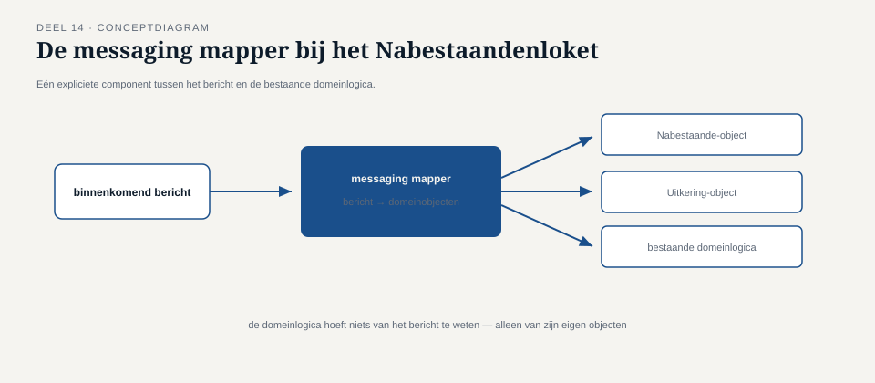

Deel 14 — Endpoint-patronen: messaging gateway, messaging mapper, service activator
Reader · Ductus-cursus Enterprise Integration Patterns · niveau 2 (professional) · deel 14 van 22
14.0 Drie teams, drie endpoints, drie interpretaties
Met vier systemen inmiddels op de broker en event backbone uit deel 11 aangesloten, ontdekte Caspar bij een code review dat de endpoints — de component uit deel 2 die het kanaal raakt namens de applicatie — er in elk van de drie teams die ze hadden gebouwd compleet anders uitzagen. Het KERN-team had een dun stukje code gebouwd dat inkomende berichten direct doorgaf aan bestaande domeinmethoden. Het team van het Nabestaandenloket had een uitgebreide vertaallaag gebouwd die zowel berichtformaat als domeinmodel actief op elkaar afstemde. Het team van de nieuwe Wegwijzer had, tot Caspars verbazing, de messaginglogica zo diep verweven met de domeinlogica dat de twee niet meer te scheiden waren zonder de hele component te herbouwen.
Geen van de drie teams had willekeurig gehandeld — elk team had, onbewust, gereageerd op een andere vorm van applicatielogica die ze moesten aansluiten. Het probleem was dat niemand dit verschil had benoemd, waardoor drie legitiem verschillende situaties drie schijnbaar willekeurig verschillende oplossingen hadden gekregen, zonder gedeeld vocabulaire om te bespreken of dat verschil terecht was.
Dit deel benoemt drie concrete endpointvormen — de messaging gateway, de messaging mapper, en de service activator — die precies de drie situaties beschrijven die Caspar bij de drie teams aantrof, en geeft taal om te beoordelen welke vorm bij welke applicatiestijl hoort.

14.1 De messaging gateway
Een messaging gateway verbergt de messaging-infrastructuur volledig achter een interface die eruitziet als een gewone, synchrone methodeaanroep — de applicatielogica "ziet" geen kanalen, berichten of headers, alleen een aanroepbare functie die toevallig, achter de schermen, via messaging is geïmplementeerd.
Dit patroon is het meest geschikt voor applicaties die al zijn opgebouwd rond aanroep-gestuurde denkwijzen (bijvoorbeeld domeinmodellen met expliciete methodenamen als verwerkAdreswijziging(mutatie)), en waar het te kostbaar of onwenselijk zou zijn om die applicatielogica te herschrijven om expliciet met berichten om te gaan. KERN's endpoint, zoals Caspar het aantrof, was in essentie al een messaging gateway: de applicatielogica riep gewoon verwerkMutatie(gegevens) aan, zonder te weten dat de aanlevering van die aanroep via een bericht op een kanaal liep.
De kracht van dit patroon is ook zijn grootste risico: omdat de aanroep er synchroon uitziet voor de applicatielogica, is het verleidelijk om ook synchroon gedrag te veronderstellen — bijvoorbeeld te verwachten dat de aanroep een directe returnwaarde geeft die het resultaat van de verwerking weerspiegelt. Als de onderliggende messaging asynchroon is (wat het meestal hoort te zijn, gezien niveau 1), moet de gateway expliciet ontwerpen hoe hij dat verschil overbrugt: geeft hij direct een "geaccepteerd"-waarde terug (vergelijkbaar met de ontvangstbevestiging uit deel 3) en levert het echte resultaat later via een callback of een aparte statusopvraging? Of doet hij, tegen het advies van deel 3 in, alsnog een blokkerende aanroep? Bij Meridiaan is voor de eerste vorm gekozen, met een expliciete naamgevingsconventie (verwerkMutatie retourneert een referentienummer, geen resultaat) om verwarring te voorkomen.
Kernzin 14 van de cursus: een messaging gateway verbergt de infrastructuur, niet de asynchrone aard van de communicatie — verberg je dat laatste ook, dan is de gateway een leugen die de applicatielogica op het verkeerde been zet.
14.2 De messaging mapper
Een messaging mapper doet expliciet wat de messaging gateway impliciet en onzichtbaar doet: hij vertaalt actief tussen het berichtformaat op het kanaal en het domeinmodel van de applicatie, als een zichtbare, eigenstandige component — niet verstopt achter een aanroep-interface, maar als herkenbaar onderdeel van het endpoint.
Dit patroon past bij applicaties waar het domeinmodel een eigen, rijke structuur heeft die niet één-op-één overeenkomt met het berichtformaat — precies de situatie bij het Nabestaandenloket, waar het interne model van een "nabestaandenzaak" uit meerdere, onderling samenhangende objecten bestaat die niet in een enkele, platte methodeaanroep passen zoals bij KERN. De messaging mapper bij het Nabestaandenloket zet een binnenkomend mutatiebericht om in een reeks domeinobjecten, inclusief het toepassen van domeinregels over hoe die objecten zich tot elkaar verhouden — iets dat het KERN-team, met zijn eenvoudiger domeinmodel, nooit nodig had.
Het onderscheid met een translator (deel 5) is de moeite waard om scherp te trekken: een translator vertaalt tussen twee berichtformaten (bijvoorbeeld intern formaat naar extern administrateurformaat), terwijl een messaging mapper vertaalt tussen een berichtformaat en een domeinmodel — de grens tussen de messaginglaag en de applicatielaag zelf, niet tussen twee externe partijen. Een messaging mapper is dus, per definitie, onderdeel van het endpoint van één specifieke applicatie, terwijl een translator vaak "tussen" twee applicaties opereert.

14.3 De service activator
Een service activator verbindt een binnenkomend bericht met een bestaande, vaak al langer bestaande service of applicatiecomponent die zelf nooit voor messaging is ontworpen — het "activeert" die service door de messaging-aanroep te vertalen naar wat die service oorspronkelijk verwachtte (vaak een directe methodeaanroep of een lokale procedure-aanroep), zonder de onderliggende service zelf te hoeven aanpassen.
Dit lijkt sterk op de messaging gateway, en het onderscheid is een kwestie van richting en historie: een messaging gateway wordt doorgaans bewust ontworpen als deel van een nieuw of vernieuwd systeem dat messaging als eerste-klas concept omarmt, terwijl een service activator typisch wordt toegevoegd rond een bestaand systeem dat niet is aangepast en ook niet zal worden aangepast — de messaging-kant is een buitenlaag om een oudere applicatie in het nieuwe landschap te laten meedraaien.
Dit was precies de situatie bij het personeelssysteem uit deel 13: een verouderde applicatie zonder moderne koppelvlakken, die de content enricher moest raadplegen. In plaats van het personeelssysteem zelf te herbouwen om berichten te kunnen ontvangen, is een service activator ervoor geplaatst die binnenkomende verrijkingsverzoeken vertaalt naar de bestaande, verouderde aanroepmethode van dat systeem (in dit geval een lokale procedure-aanroep die het systeem al decennia ondersteunde), en het antwoord weer terugvertaalt naar een bericht op het antwoordkanaal.
De service activator draagt hierdoor een specifiek risico dat noch de gateway noch de mapper in dezelfde mate heeft: hij kan de onvolkomenheden van de onderliggende, oudere service niet verbergen, alleen doorgeven. Als het personeelssysteem zelf onbetrouwbaar en traag is (zoals in deel 13 vastgesteld), kan de service activator dat niet oplossen — hij kan alleen zorgen dat die onbetrouwbaarheid zich op een gecontroleerde, zichtbare manier manifesteert in de messaging-laag (bijvoorbeeld via het dead letter channel uit deel 9), in plaats van als een onvoorspelbare, ongedocumenteerde storing.
14.4 Drie endpointvormen naast elkaar
| Patroon | Wanneer | Wat het verbergt |
|---|---|---|
| Messaging gateway | Applicatie is aanroep-gestuurd, wil messaging niet "zien" | De hele messaging-infrastructuur, achter een aanroep-achtige interface |
| Messaging mapper | Rijk domeinmodel dat niet één-op-één met het berichtformaat overeenkomt | Niets — maakt de vertaling juist expliciet zichtbaar |
| Service activator | Bestaande, niet voor messaging ontworpen service moet worden aangesloten | De messaging-aard voor de oude service, niet de onvolkomenheden van die service zelf |
Terug naar Caspars ontdekking bij de drie teams: het KERN-team had, terecht voor hun eenvoudige domeinmodel, een messaging gateway gebouwd. Het Nabestaandenloket-team had, terecht voor hun rijke domeinmodel, een messaging mapper nodig — hun instinct was juist, ook al hadden ze het patroon nooit met naam benoemd. Het Wegwijzer-team had echter geen van drieën correct toegepast: hun vermenging van messaging- en applicatielogica was, in de terminologie van dit deel, gewoon een ontbrekend endpoint — precies de fout die deel 2 al waarschuwde te vermijden ("alleen het endpoint hoort het kanaal te kennen"), nu zichtbaar op landschapsschaal omdat er eindelijk een vergelijkingsmateriaal was om het als afwijking te herkennen.
Samenvatting van deel 14
- Een messaging gateway verbergt de messaging-infrastructuur achter een aanroep-achtige interface, geschikt voor aanroep-gestuurde applicatielogica — met als risico dat de asynchrone aard ook onbedoeld verborgen raakt.
- Een messaging mapper vertaalt expliciet tussen berichtformaat en een rijk domeinmodel, als zichtbaar onderdeel van het endpoint — anders dan een translator (deel 5), die tussen twee berichtformaten van verschillende applicaties vertaalt.
- Een service activator sluit een bestaande, niet voor messaging ontworpen service aan zonder die service zelf aan te passen, maar kan de onvolkomenheden van die service niet verbergen, alleen zichtbaar en beheersbaar maken.
- Het ontbreken van een van deze drie, herkenbare vormen — zoals bij de Wegwijzer — is zelf een signaal dat applicatie- en messaginglogica ongewenst zijn vermengd.
Vooruitblik
Deel 15 behandelt de systeembeheerpatronen die niveau 2 nodig heeft om een landschap van deze omvang operationeel te bewaken: control bus, wire tap, detour, message history en smart proxy — patronen die het mogelijk maken om in te grijpen op, en inzicht te krijgen in, een keten zonder de keten zelf te herbouwen.